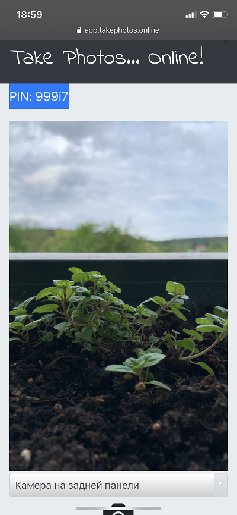

User Manual
Here you can find how to use the service, frequently asked questions and also tips&tricks

Photographer Interface
You are Photographer
You are shooting photos with your client mobile phone or his connected web-camera.
-
1
To start working with the service you should arrange a prepaid hours in the following way:
You order an access key (we call it "token") on this page. It is valid for a limited time (1,2,5 hours). You may use this time in any proportions, share with anybody. This token is the only access key to the service. No registration required. Your e-mail is the only required for delivering token. - 2 After the payment confirmation you will receive e-mail with a link to your personal photographer page, which will be associated with your new token. Open this link in any browser. Mobile one is also supported. You will find the rest prepaid hours amount at the top of the page.
- 3 Set up an audio channel with your client using any common messenger like watsApp, Viber, Telegram, Skype, etc.
- 1 Please send your client the following link https://app.takephotos.online. S/He needs to copy this link and paste to a mobile (or other) browser and open it. The supported browsers are iOS Safari, Android Internet, MacOS Safari, Windows Chrome.
- 2 Then the client will receive an access request to his camera. S/He should select "Confirm". It is important to explain the client that s/he should not close/minimize or open other applications during all the photo session other than this browser window .
- 3 Then at the top of the client`s page a new PIN code will appear. The client should send it to you. Input the PIN into the corresponding field at your photographer page. Press "On" button to start receiving the stream from the client`s camera. After pressing the button your time session has started to be billed and you may start the photo session. To finish the photo session press "Off" and your billing session will be stopped.
- 1 Press a big green button to save the current photo.. It will be automatically saved in the highest quality, available on the client`s device.
- 2 After finishing the photo session do not forget to press "Off" to save your token time.
- 3 Press "Refresh" button below to list your saved photos by photosets. You will see all the photosets and "Download" button for each of them. The files will be available for at least 3 days.
Prerequisites
Setting up a one-way video channel
Shooting and Downloading the Photos
You are a Client
You found a photographer who will shoot you online using your own mobile phone or web camera.
- 1 Set up an audio channel with your photographer in any voice messenger (watsApp, Viber, Telegram, Skype, etc).
- 2 Go to the link https://app.takephotos.online on your mobile phone (or PC if you want to use a web camera). To give our service an access to your camera press "Confirm" in pop-up window.
- 3 Now send your photographer PIN code from the top of the page. Now your photographer will be able to connect. Important that this page should be opened during all the photo session to make the photographer be able to see the stream from your camera.
Have a nice Photo Session!

Client Page Interface
Client Page Interface
Tips and Tricks
- The Client is able to switch between the available cameras (front, rear, other ones)
- When the Client refreshes his page by security reasons the PIN could be changed
- As it is a high quality photo shooting a very bad internet connection could lead to a captured photos transfer delay or even loss. We are optimizing our service every day to not this happen.
- If the stream frame freezes for more than 5 seconds the pictures may not saved. To avoid such issues just reconnect to the Client by pressing "Off", then "On" button.
- If you reconnected several times and still do not see the stream just press "Refresh client application". The Client application will be refreshed, but s/he have to confirm the camera access one more time.
- It is recommended to make some test photos at the beginning of the photo session. Then just download them to check the internet connection.